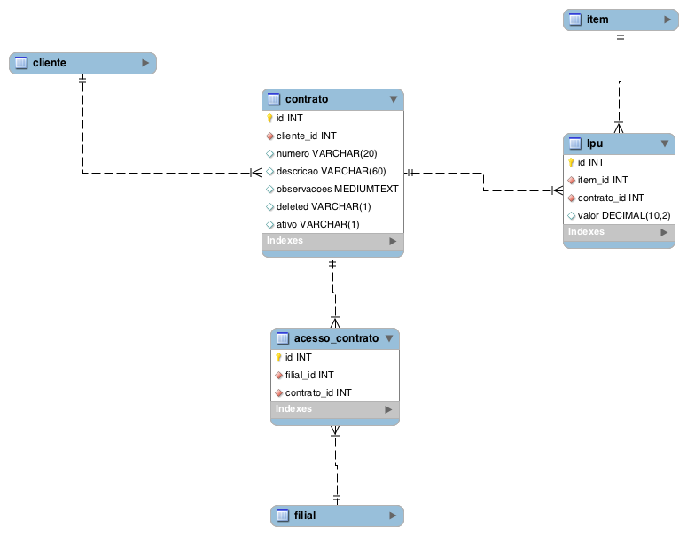
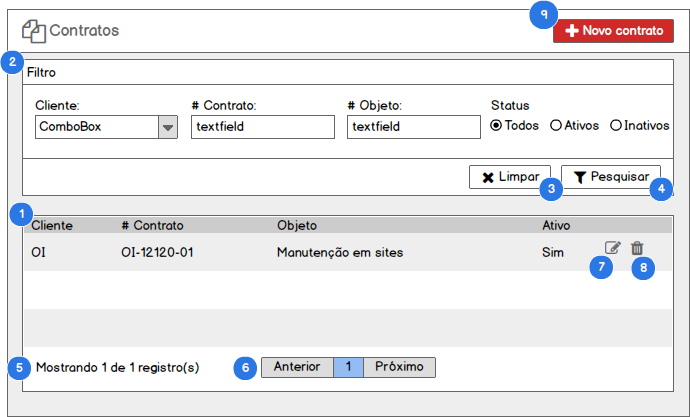
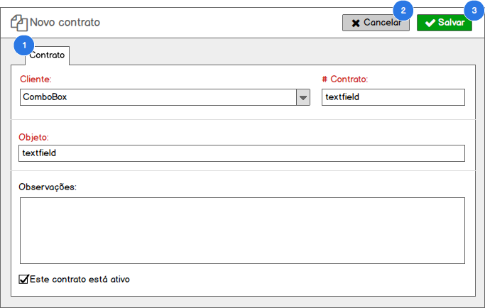
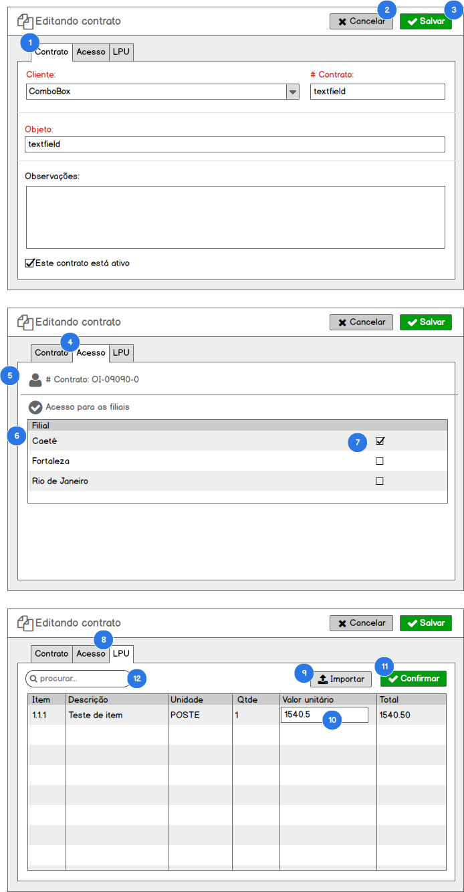

Funcionalidade: Cadastro de contratos#
Como usuário com perfil (1. Diretor, 2. Gerente) no SisGeop, eu quero gerenciar os contratos da JTEL com seus clientes no SisGeop.
Modelo de dados#

Tabelas relacionadas#
| Tabela | Descrição |
|---|---|
| contrato | Armazena os registros de contratos entre a JTEL e seus clientes |
| cliente | Armazena os registros de clientes do sistema |
| filial | Armazena os registros de filiais da JTEL no sistema |
| acesso_contrato | Armazena os acessos que as filiais possuem aos contratos |
| item | Armazena os itens (produtos e serviços) prestados pela JTEL |
| lpu | Armazena a lista de preços unitários do contrato |
Listar Contratos#
Contexto
- Para acessar essa funcionalidade o usuário acessa o menu Cadastrar > Contratos;
- O sistema deverá exibir a lista de todos os registros cadastrados quando o usuário entrar na tela;
- A lista de contratos exibidas nos resultados será de acordo com o perfil de acesso do usuário logado;
- O usuário apenas poderá visualizar os contratos dos clientes vinculados à filial em que ele tem acesso;
PROTÓTIPO#

1. LISTA DE CONTRATOS#
QUANDO o usuário acessar a tela de listagem de contratos
ENTÃO o sistema exibirá os todos os contratos cadastrados no sistema em uma tabela com as colunas definidas no protótipo seguindo a mesma ordem de exibição.
2. FILTRO DE CONTRATOS#
QUANDO o usuário preencher os campos do formulário Filtro e clicar no botão Pesquisar
ENTÃO o sistema irá aplicar o filtro desejado na lista de contratos, retornando apenas contratos que combinam com o grupo de filtros aplicado
Regras
O formulário Filtro pode ser expandido ou encolhido sempre ao clicar na barra de títulos do formulário. E o status encolhido/expandido deverá ficar salvo na sessão do usuário na máquina, mantendo uma memória sempre que o usuário utilizar o SisGeop na mesma máquina.
3. LIMPAR FILTRO#
QUANDO o usuário clicar no botão Limpar
ENTÃO o sistema limpa o formulário Filtro e atualiza a lista de contratos
4. APLICAR FILTRO#
QUANDO o usuário clicar no botão Pesquisar
ENTÃO o sistema aplica o filtro preenchido pelo usuário no formulário Filtro e atualiza a lista de contratos
5. TOTALIZAÇÃO DE REGISTROS#
QUANDO o usuário acessar a lista de contratos
ENTÃO o sistema apresenta o resultado da consulta
E a totalização de registros com a mensagem Mostrando x de y registros
6. PAGINAÇÃO#
QUANDO o usuário acessar a lista de contratos
ENTÃO o sistema apresenta o resultado da consulta
E um componente de paginação que possibilita navegar entre as páginas dos resultados
REGRAS devem ser exibidos em cada página, 25 registros
7. EDITAR CONTRATO#
QUANDO o usuário clicar na opção Editar
ENTÃO o sistema aciona o caso Editar Contrato
8. EXCLUIR CONTRATO#
QUANDO o usuário clicar na opção Excluir
ENTÃO o sistema aciona o caso Excluir Contrato
9. NOVO CONTRATO#
QUANDO o usuário clicar no botão Novo Contrato
ENTÃO o sistema aciona o caso Incluir Contrato
Incluir Contrato#
Contexto
- Para acessar essa funcionalidade o usuário aciona o botão Novo Contrato a partir da tela de listagem de contratos;
- O sistema deverá exibir o formulário para a criação de um novo contrato;
PROTÓTIPO#

1. FORMULÁRIO DE INCLUSÃO DE CONTRATO#
QUANDO o usuário acionao o botão Novo Contrato a partir da tela de listagem de contratos
ENTÃO o sistema exibe o formulário de inclusão de contrato
2. CANCELAR INCLUSÃO DE CONTRATO#
QUANDO o usuário clicar no botão Cancelar
ENTÃO o sistema sai da tela de inclusão de contrato e retorna para a tela de listagem de contratos
3. SALVAR CONTRATO#
QUANDO o usuário clicar no botão Salvar
ENTÃO o sistema valida o preenchimento do formulário
E Salva os dados preenchidos no formulário criando um novo registro de contrato no banco de dados
E Exibe a mensagem "Registro incluído com sucesso" e redirecionando o usuário para a edição do contrato criado
3.1 Formulário inválido#
CASO o formulário não esteja devidamente preenchido
ENTÃO o sistema apresenta a seguinte mensagem "Os campos destacados são de preenchimento obrigatório"
E destaca os campos que precisam ser preenchidos para o usuário
3.2 Número do contrato duplicado#
CASO o número do contrato informada no registro que o usuário estiver inserindo já esteja em utilização por outro contrato
ENTÃO o sistema exibirá a seguinte mensagem "Já existe um contrato com este número"
E interromperá a inserção do registro do contrato.
OBRIGATORIEDADE DE CAMPOS#
O sistema deverá exibir de forma destacada os campos do formulário que são de preenchimento obrigatório
Editar Contrato#
Contexto
- Para acessar essa funcionalidade o usuário aciona o botão Editar a partir da tela de listagem de contratos;
- O sistema deverá exibir o formulário para a edição de um contrato carregando todos os dados cadastrados para o contrato nos respectivos campos de edição do formulário;
PROTÓTIPO#

1. FORMULÁRIO DE EDIÇÃO DE CONTRATO#
QUANDO o usuário aciona o botão Editar na tela de listagem de contratos
ENTÃO o sistema exibe o formulário de edição de contratos com os dados do contrato selecionado carregados no formulário para edição.
2. CANCELAR EDIÇÃO DE CONTRATO#
QUANDO o usuário clicar no botão Cancelar
ENTÃO o sistema sai da tela de edição de contrato e retorna para a tela de listagem de contrato
3. SALVAR CONTRATO#
QUANDO o usuário clicar no botão Salvar
ENTÃO o sistema valida o preenchimento do formulário
E Salva os dados preenchidos no formulário atualizando o registro do contrato no banco de dados
E Exibe a mensagem "Registro atualizado com sucesso" e redirecionando o usuário para a listagem de contratos
3.1 Formulário inválido#
CASO o formulário não esteja devidamente preenchido
ENTÃO o sistema apresenta a seguinte mensagem "Os campos destacados são de preenchimento obrigatório"
E destaca os campos que precisam ser preenchidos para o usuário
3.2 Número do contrato duplicado#
CASO o número do contrato informado já esteja em utilização por outro contrato
ENTÃO o sistema exibirá a seguinte mensagem "Já existe um contrato com este número"
E interromperá a inserção do registro do contrato.
4. ABA DE ACESSO#
QUANDO o usuario clicar na aba Acesso
ENTÃO o sistema deverá carregar uma lista com as filiais que possuem acesso ao contrato
5. IDENTIFICAÇÃO DO CONTRATO#
Ao lado do ícone de identificação do contrato deverá estar informado o Número do contrato para fácil localização do usuário.
6. LISTA DE FILIAIS#
A lista de filiais irá exibir a relação de filiais que podem vir a ter acesso ao contrato editado.
7. ACESSO DA FILIAL AO CONTRATO#
QUANDO o usuário clicar no checkbox na listagem de filiais
ENTÃO o sistema irá alterada a permissão de acesso da filial ao contrato editado
7.1 Liberação de acesso#
CASO o checkbox seja marcado
ENTÃO o sistema cria o registro de acesso da filial ao contrato
E exibe a mensagem "Acesso liberado para a filial"
7.2 Revogação de acesso#
CASO o checkbox seja desmarcado
ENTÃO o sistema exclui o registro de acesso da filial ao contrato
E exibe a mensagem "Acesso revogado para a filial"
8. ABA DE LPU#
QUANDO o usuario clicar na aba LPU
ENTÃO o sistema deverá carregar a relação de LPUs específicas para o contrato
9. IMPORTAÇÃO DA RELAÇÃO DE LPU#
QUANDO o usuário clicar no botão Importar
ENTÃO o sistema irá acionar a funcionalidade Importar preços de LPU para o contrato
10. EDIÇÃO DE VALORES#
QUANDO o usuário editar os valores nas colunas de valor unitários e quantidade
E clicar no botão Confirmar
ENTÃO o sistema irá atualizar a LPU do contrato editado com os respectivos valores informados pelo usuário
11. CONFIRMAÇÃO DE VALORES#
QUANDO o usuário clicar no botão Confirmar
ENTÃO o sistema atualiza os valores dos itens de LPU nas respectivas quantidades e valores unitários
E exibe a mensagem "Valores atualizados com sucesso"
12. FILTRAR ITENS DE LPU#
QUANDO o usuário digitar chaves de pesquisa no campo Pesquisar
ENTÃO o sistema aplica um filtro local na listagem de LPUS
E exibe ao usuário apenas itens que combinem com o filtro aplicado
OBRIGATORIEDADE DE CAMPOS#
O sistema deverá exibir de forma destacada os campos do formulário que são de preenchimento obrigatório
Excluir Contrato#
Contexto
- Para acessar essa funcionalidade o usuário aciona o botão Excluir a partir da tela de listagem de contratos;
- A exclusão de um usuário deverá ser uma exclusão Lógica de forma que o registro da despesa nunca será fisicamente excluído do banco de dados;
QUANDO o usuário acionar o botão Excluir em uma linha na lista de contratos
ENTÃO o sistema exibe uma janela de confirmação com a mensagem "Deseja realmente excluir o registro selecionado?"
QUANDO o usuário confirmar a exclusão do registro
ENTÃO o sistema efetua a desativação Lógica do registro do contrato
E atualiza a lista de contratos de acordo com o filtro previamente definido pelo usuário